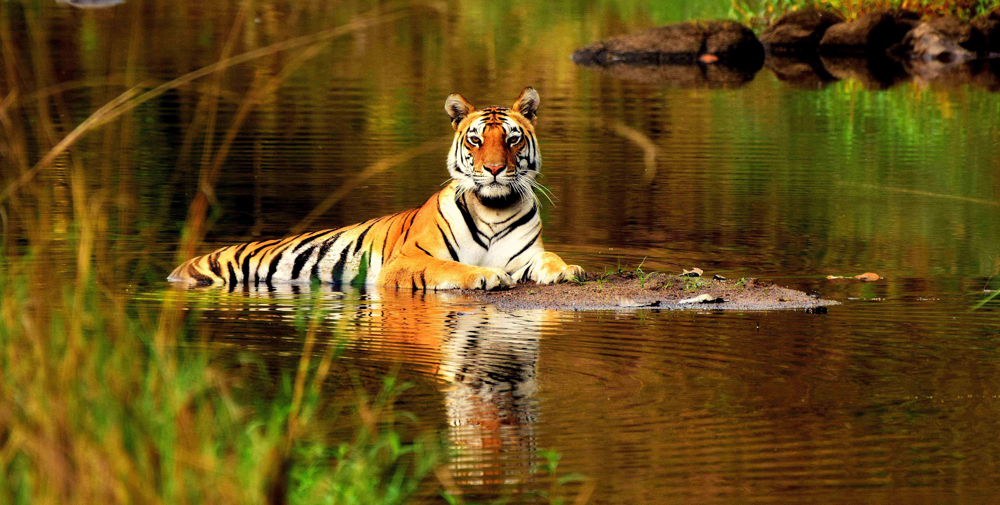
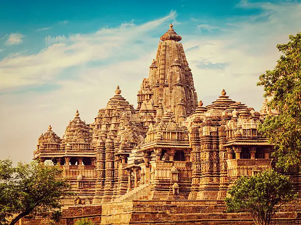
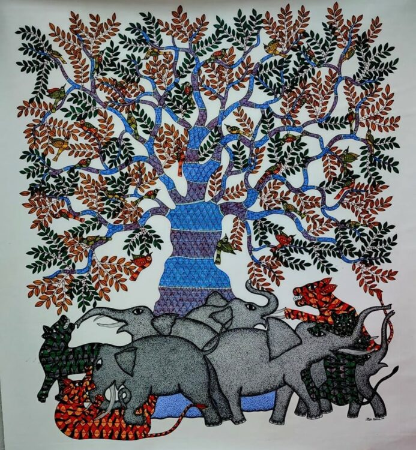
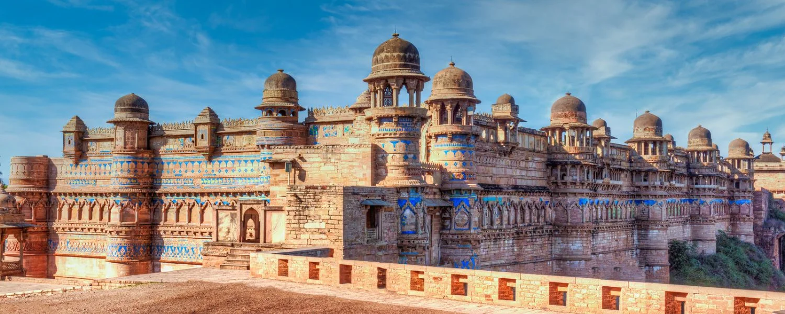

Kanha National Park is one of India’s largest and most famous tiger reserves. It is known for its dense sal forests, open meadows, and diverse wildlife including tigers, leopards, and barasingha. The park inspired Rudyard Kipling’s "The Jungle Book" and remains a major attraction for nature lovers.

The Khajuraho Temples are a UNESCO World Heritage Site built during the Chandela dynasty. They are admired for their stunning Nagara-style architecture and intricate stone carvings. These temples beautifully reflect ancient Indian art, culture, and spiritual traditions.

Gond art is a traditional tribal art form practiced by the Gond community of central India. It uses vibrant natural colors and detailed patterns inspired by animals, forests, and everyday life. This art style represents a deep connection between humans and nature.

Madhya Pradesh is home to magnificent forts, palaces, and ancient cities showcasing India's rich history. Places like Gwalior Fort and Mandu reflect architectural brilliance and royal legacy. These heritage sites attract historians, tourists, and culture enthusiasts from around the world.
